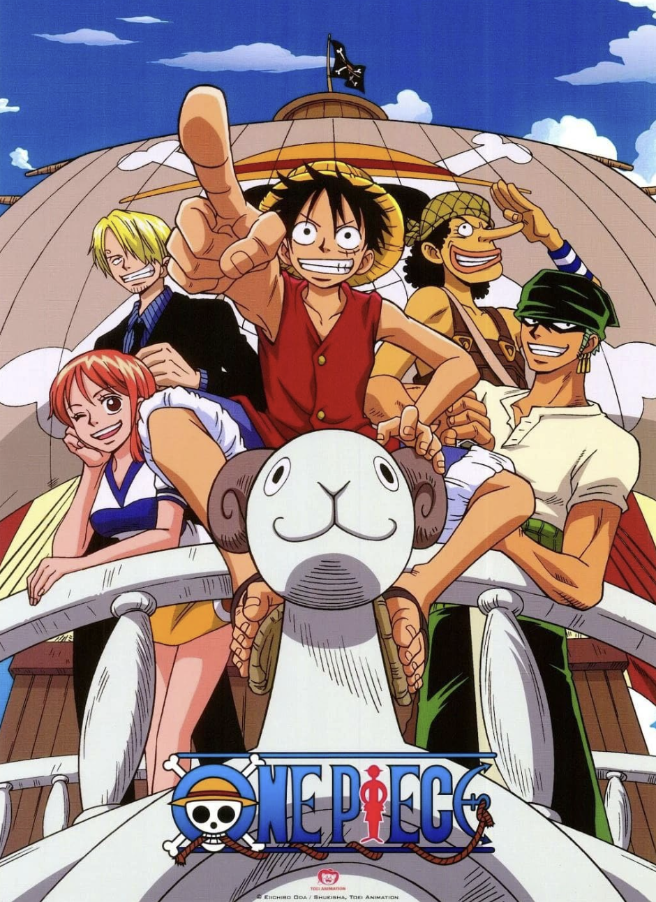

Ik ben Devid Amiryan, 22 jaar oud en dit is me eerste website die ik ga maken. In me vrijetijd speel ik stratagie / rhythm games ik graag en kijk ik naar verschillende series.
Af en toe maak ik beats. Ik kan goed zwemmen, omdat ik vroeger deed aan wedstrijdzwemmen. Het leek me interessant om ICT als opleiding te kiezen omdat ik graag nieuwe dingen wil leren.
Een persoonlijk feitje over mij is dat ik leergierig ben.
Ik heb de opleiding ict gekozen omdat ik geïnteresseerd ben in technologie, computers en coderen.
Vooral het coderen leek mij de leukste technische richting om mijn kennis in te vergroten en me verder in te verdiepen.
ik leergierig ben en ICT leek me een intressante richting om te leren. Ook is ICT een echte uitdaging om mij limieten te testen en om te verzorgen dat alles werkt.
Als alles werkt voelt dat als een opluchting.
ICT is ook toekomst gericht dus een ideale richting om je passie op te bouwen.
dagelijks verandert de technologie met Nieuwe ideeen en creaties en daardoor kan je altijd iets nieuws leren.
Dat is ook de reden waarom ik ICT super intressant vindt.
Ik ga mijn doel bereiken door veel te oefenen en nieuwe dingen te leren.
Fouten maken hoort er ook bij en door fouten te maken leer ik nog meer door ervaring optebouwen.
ICT is geweldig. Door ICT kunnen we programma's gebruiken waarbij we van alles kunnen doen.
Door ICT heb je games en allerlei websites om video's te kijken en te kunnen genieten van je vrije tijd.
Door ICT kunnen we online winkelen en alles kopen wat je wilt in een paar klikken.
Dit geeft me motivatie, omdat mensen dit allemaal hebben gecreëerd.
Dit geeft me motivatie, zelfs als dingen niet gaan zoals gepland.
Door de juiste mindset te hebben en een echte reden te hebben om door te gaan. Ik wil de volgende persoon zijn die iets heeft gecreëerd wat mensen willen gebruiken.
Ik wil later iets van impact creëren; het maakt niet uit of het klein of grootschalig is, als het maar behulpzaam is.
Hierdoor wil ik mijn grenzen verleggen en mijn limiet testen.
Wat ik persoonlijk wil doen met ICT, is een programma maken voor een bedrijf.
Dat is wel een van de eerste dingen die ik wil maken als ik daar de kans voor krijg.
Als beginner kan ik alleen nog html maar ik ben erg leergierig en gemotiveerd om mij skills te ontwikkelen.
In me vrijetijd speel ik video games en ik kijk naar verschillende series.

